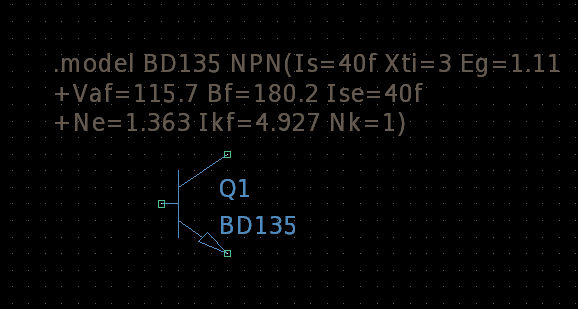
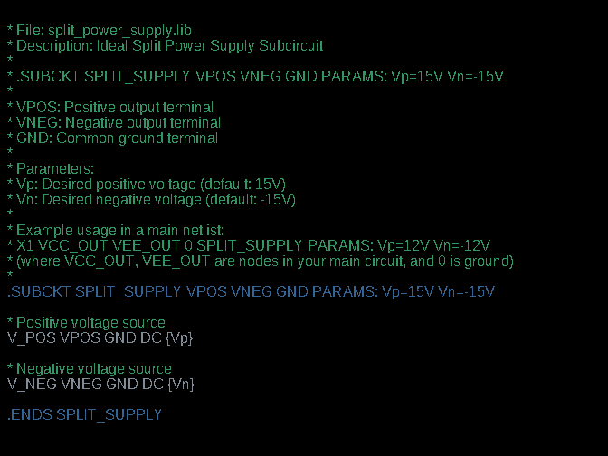
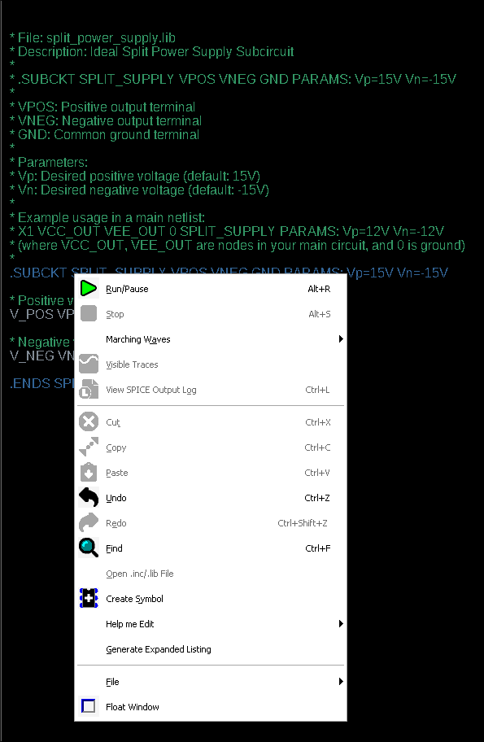
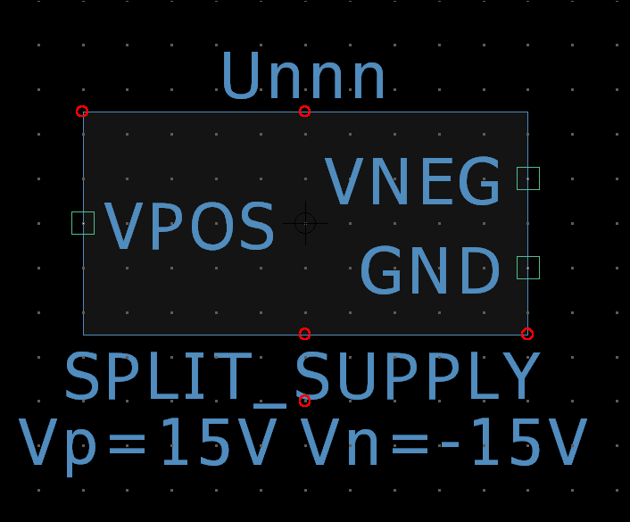
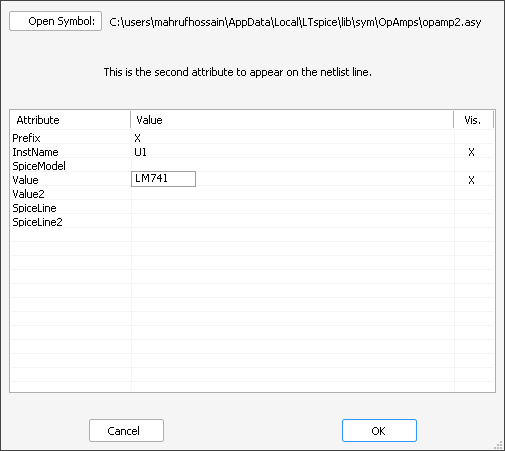
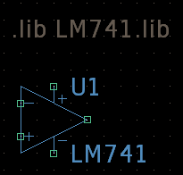

7. Advanced: Using Third-Party Models (e.g., Op-Amp, MOSFET)
While LTSpice comes with a vast built-in library, you'll often need to simulate a specific component (like a particular Op-Amp, MOSFET, or BJT) that isn't included. This is where third-party models come in. These are SPICE models provided by manufacturers or found online, allowing for highly accurate simulations of real-world components.
Third-party models typically come in .lib (library) or .mod (model) files and define the behavior of components using .model or .subckt statements.
7.1 Obtaining a Third-Party Model
The first step is to acquire the SPICE model for your desired component. Here's how:
- Manufacturer Websites: The most reliable source. Companies like Analog Devices (Linear Technology), Texas Instruments, STMicroelectronics, and ON Semiconductor provide SPICE models on their product pages, often under a Tools & Software or Design Resources section.
- Online Repositories: Websites like Digi-Key, Mouser, or dedicated SPICE model sites sometimes host models.
- File Type: Look for files with extensions like .lib (SPICE library) or .mod (SPICE model). Sometimes, they are embedded in larger downloads or zip files.
For this tutorial, we'll use a power transistor model BD135 (e.g., from a file named BD135.lib) as an example. Its content would look similar to this (simplified):
* BD135 Power Transistor
.model BD135 NPN(Is=40f Xti=3 Eg=1.11 Vaf=115.7 Bf=180.2 Ise=40f Ne=1.363 Ikf=4.927 Nk=1)
7.2 Importing the Model into LTSpice
Once you have the .lib or .mod file, you need to tell LTSpice where to find it. The most common and recommended method for specific projects is to reference it directly in your schematic.
- Save the Model File: Place the .lib or .mod file (e.g., BD135.lib) in the same directory as your .asc schematic file. This makes your project self-contained and portable.
- Add a SPICE Directive:
- On your schematic, go to Edit > SPICE Directive (or press ".").
- In the dialog box, type .lib BD135.lib.
- Click OK and place this directive on your schematic.
For models defined with .subckt, you might use .inc instead of .lib, though .lib usually works for both. If the model file is not in the same directory, you'll need to provide the full path. For example:
.lib C:\Path\To\Your\Model\File\ModelName.libAnother way to do this is you can write the whole .model directive into the schematic. For this
- On your schematic, go to Edit > SPICE Directive (or press ".").
- In the dialog box, type the whole spice model
.model BD135 NPN(Is=40f Xti=3 Eg=1.11 Vaf=115.7 Bf=180.2 Ise=40f Ne=1.363 Ikf=4.927 Nk=1) - Click OK and place this directive on your schematic. 
Alternative (Less Recommended for Projects): You can also copy .lib files into LTSpice's default library directories:
- For models like BJT, MOSFET, etc., copy them to:
C:\Program Files\LTC\LTspiceXVII\lib\cmp - For subcircuits, copy them to:
C:\Program Files\LTC\LTspiceXVII\lib\sub
However, this makes projects less portable and can be overwritten by software updates.
7.3 Using a Component Symbol with the Model
Once the model is imported, you need to associate it with a generic LTSpice symbol on your schematic. The method depends on whether the model file uses a .MODEL or .SUBCKT statement.
For .MODEL statements (e.g., MOSFETs, Diodes, BJTs):
These are for simple devices that have a standard LTSpice symbol. You simply use a generic symbol and specify the model name.
- Place a generic component symbol. For a BJT, go to Component (or press 'P') and select npn or pnp.
- CTRL + Right-click on the placed symbol.
- In the Value field, type the exact model name defined in your .lib or .mod file (e.g., BD135). This links the generic symbol to the specific parameters of your third-party component.
For .SUBCKT statements (e.g., Op-Amps, complex ICs):
For subcircuits, which often have custom pin configurations, the best practice is to generate a custom symbol. This ensures the pins on the schematic match the pins in the subcircuit definition.
- Generate a symbol from the model file:
- Open the .lib or .mod file directly in LTSpice (File > Open). 
- Once the file is open, place the cursor on the line that begins with the .SUBCKT statement.
- Right-click on the mouse and select Create Symbol. LTSpice will automatically generate a graphical symbol with pins that match the pin order in the subcircuit statement. 
- Modify the symbol design as necessary (e.g., arrange pins, add labels). 
- Save this generated symbol (it will have a .asy extension) in the same directory as your schematic for portability.
- Now, you can add this new symbol to your schematic using the Component (P) button and Browse to your new symbol file.
- Alternative (for simple cases): Use an existing symbol: If a generic symbol exists (e.g., opamp for an Op-Amp subcircuit like LM741), place it. Right-click on the symbol and set its Value to the .subckt name (e.g., LM741). You must also ensure the Prefix field is set to 'X' to tell LTSpice it is a subcircuit call. 
Here's a sample Op-Amp subcircuit schematic. Notice the .lib directive and the generic opamp symbol with its value set to LM741.
7.4 Troubleshooting Common Issues
Working with third-party models can sometimes lead to errors. Here are a few common ones and their solutions:
- "Cannot find definition for model..." Error:
- Double-check the model name in your symbol's Value field – it must exactly match the name in the .model or .subckt statement.
- Verify the path in your .lib or .inc directive. Is the file in the correct directory, or is the full path correct?
- Is the .lib or .inc directive actually on the schematic?
- Pin Mismatch Errors: If you generate a symbol or use a generic one, ensure its pins (nodes) map correctly to the model's pin order. This is a common issue with subcircuits. LTSpice will usually warn you if there's a mismatch.
- Convergence Issues: Complex models can sometimes cause simulation convergence problems. Try enabling GMIN stepping or setting a smaller Maximum Time Step in the Transient Analysis setup.
- Corrupted/Invalid Model File: Ensure the downloaded model file isn't corrupted or incomplete. Open it with a text editor to verify its contents.
Mastering third-party models opens up a whole new level of realistic circuit simulation in LTSpice, allowing you to design with confidence using actual component specifications.